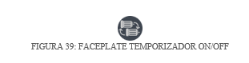

8.1 INTERMITÊNCIA 2 BOMBAS
A popup de intermitência de duas bombas se refere a uma configuração adicional para algumas bombas, que irão operar de forma intercalada uma com a outra.
8.1.1 FACEPLATE

Para cada equipamento no sistema que possuir a configuração de temporizador, existirá um símbolo próximo do mesmo (o qual é mostrado na FIGURA 39), que abrirá a popup do temporizador quando for realizado um clique nele.
Na FIGURA 40 é mostrada a popup com suas configurações.

FIGURA 39: FACEPLATE TEMPORIZADOR ON/OFF
8.1.2 OPERAÇÃO
FIGURA 40: POP UP INTERMITÊNCIA 2 BOMBAS
ÍCONES POP UP INTERMITÊNCIA
- Descrição indicando as bombas em intermitência controladas na popup.
- Indicador de comando automático para acionamento das bombas. Com a cor escura e sem ponto de exclamação dentro indica que não há sinal/comando, círculo azul com ponto de exclamação interno indica que há sinal/comando.
- Botão para alterar o modo de intermitência para alternância, cada vez que for dado o comando para ligar uma das bombas, ligará uma bomba diferente.
- Botão para alterar o modo de intermitência para modo por tempo, contará o tempo definido e após este tempo desligará a bomba e ligará a outra pelo mesmo período de tempo.
- Indicador do tipo barra do tempo decorrido, conforme o tempo decorrido for aumentando a barra verde aumenta, indicando o percentual de tempo decorrido.
- Botão de seleção de modo automático e manual.
- Botão invisível para ligar o equipamento.
- Indicador de equipamento indisponível.
- Verificar linha 4 da TABELA 4-9, os status vão ser os iguais.
- Botão fechar popup.
- Botão habilita bomba 2 para acionar em modo manual.
- Botão habilita bomba 1 para acionar em modo manual.
- Tempo em segundos de bomba ligada no modo de intermitência por tempo.
- Tempo em minutos de bomba ligada no modo de intermitência por tempo.
- Tempo em horas de bomba ligada no modo de intermitência por tempo.
- Seleção do modo de operação, sendo Intermitência, somente Motor 01 ou Motor 02 e Ambos.
TABELA 40: ÍCONES POP UP INTERMITÊNCIA